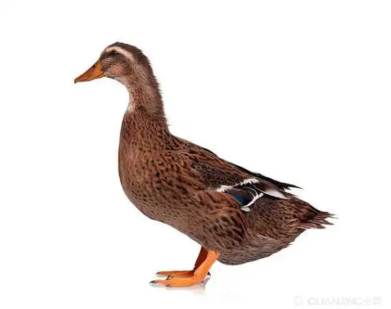
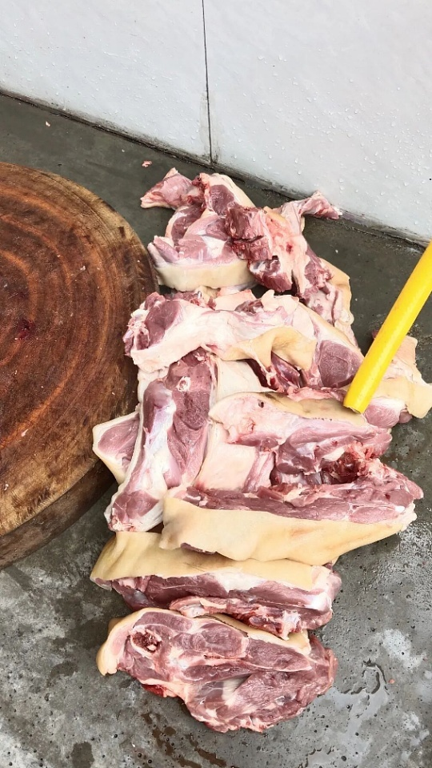
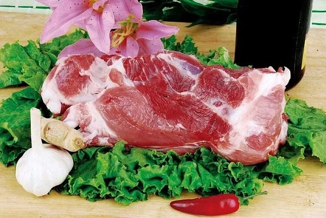
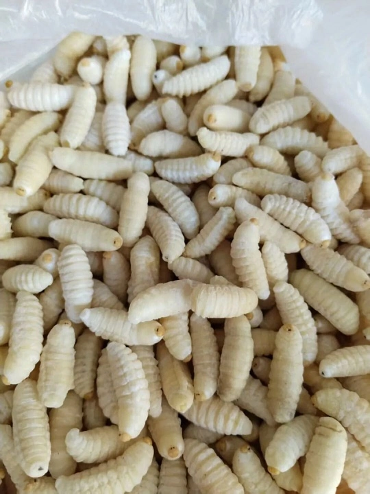
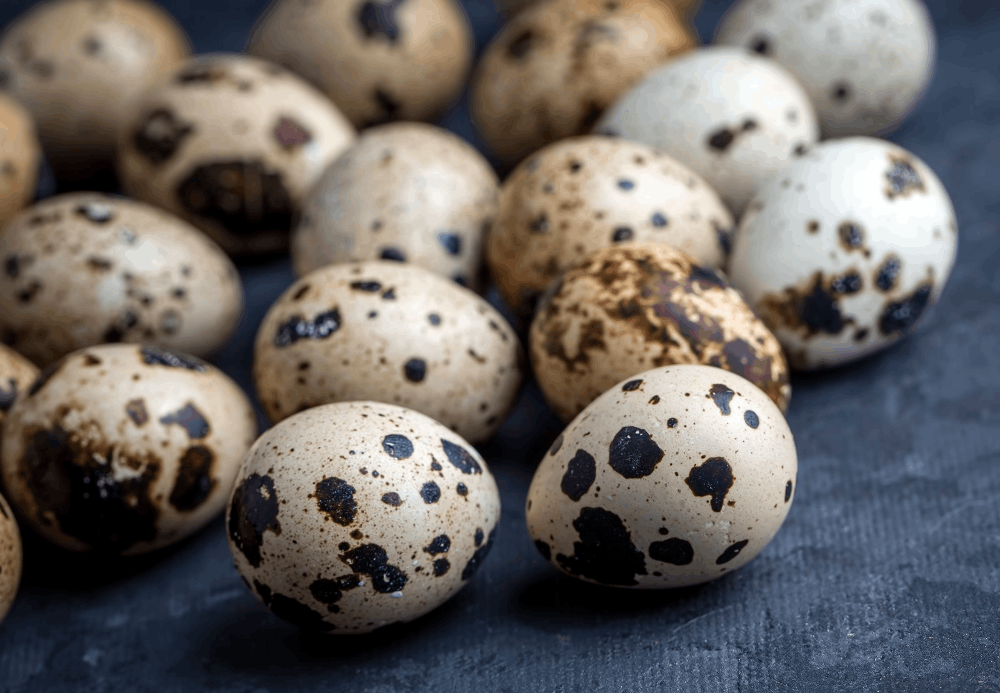

长街宴 · 信仰之味
🚫 禁忌不上席 ｜ ✅ 可上圣席
🚫 禁忌不上席
 田螺
田螺
淤泥环境
文化视为不洁
文化视为不洁
 黄鳝
黄鳝
形态模糊
不合神圣秩序
不合神圣秩序
 家鸡
家鸡
日常祭品
庄重性不足
庄重性不足

家鸭日常家禽
不入寨神圣宴
不入寨神圣宴

狗肉驱鬼用途
排除于感恩祭
排除于感恩祭

家猪非祭祀龙猪
未被祝祷
未被祝祷
✅ 可上圣席
 竹鸡 / 山鸡
竹鸡 / 山鸡
山林野性
寨神喜爱祭品
寨神喜爱祭品
 梯田鱼
梯田鱼
稻鱼共生
四素同构结晶
四素同构结晶
 鸟类
鸟类
山林生长
自然馈赠
自然馈赠

蜂蛹悬崖采集
稀缺与勇气
稀缺与勇气

鹌鹑蛋梯田环境
自然孕育
自然孕育
 野生菌
野生菌
山林自生
自然珍品
自然珍品
"唯有来自山林与梯田的『自然珍馐』
方具资格登上寨神圣宴。"
方具资格登上寨神圣宴。"